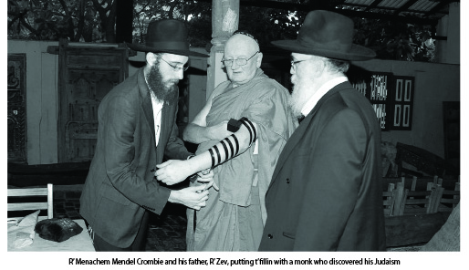

Saving Souls from the Forces of Impurity
A selection of moving stories of shluchim reaching out to lost Jewish souls seeking spirituality in all the wrong places.

In a humorous vein, I once heard that the words, “l’hevel v’la’rik” allude to Islam and Christianity. The word hevel is Hei for their five prayers a day, beis for their two holidays, and lamed for thirty days in the month of Ramadan. The word rik is numerically equivalent to the name of oso ha’ish.
As is known, there is a connection between the Chassidic entries in the HaYom Yom and the dates in which they appear. This entry about “l’hevel v’rik” of avoda zara was written for the date closest to Nittel Nacht, which was established so as not to give chayus to the sitra achra.
HARD TO RECTIFY
Nearly every day, R’ Shimi Goldstein, shliach to Pushkar, India, deals with young people who visit houses of idol worship that are so prevalent in India. Like all the shluchim in countries like these, he tries to save people from the dangers of these places.
One day, a girl who was staying at the Chabad house told R’ Shimi that she was planning on taking a ten days of silence meditation course in a monastery. He tried to dissuade her, telling her it was idol worship and impurity, but she went anyway. Ten days later, she returned to the Chabad house and said that she was deeply sorry that she took the course and now she needed a tikkun.
R’ Shimi advised her to study chapter 24 of Tanya where it explains at length about the distance and estrangement from G-d brought about by any contact with avoda zara. The girl started learning but she soon went back to R’ Shimi and said it was too hard for her and she wanted a different tikkun.
R’ Shimi asked whether she was willing to commit not to ever tell anyone that she took this course. She agreed initially, but two hours later she came back to the Chabad house, crying and saying that on second thought she could not keep to this commitment. She said, “Throughout the ten days, whenever it was especially hard for me to remain silent, I reminded myself that I had to see this through in order to be able to tell everyone that I had done it, and that is what helped me carry on. I have to tell people.”
Like many things from the side of unholiness, the enjoyment is in being able to say afterward, “I did it.” This is unlike in matters of holiness where the greater one becomes, the more one tries to hide and not publicize their spiritual accomplishments. (This reminds me of the story told about R’ Reuven Dunin. A bachur who had become interested in Chassidus told him that he wanted to daven Maariv at length in shul. R’ Dunin told him to make believe that he was davening in the minyan and to finish at the same time as everyone else, and then to go into a different room, close the door, and daven at length, without anyone knowing about it.)
NO SLAP IN THE FACE
Yochanan went through the system: high school, the army, and “searching for himself.” Since he knew nothing about Judaism, his soul screamed out for spirituality. In his search, he found a friend who had already become knowledgeable in various meditative techniques in a monastery in South Korea. The two of them would go every day to a certain grassy area where they would meditate.
Yochanan said that during the months that they sat for hours in meditation, they thought: Who am I? Who am I? Then the friend would shout, “Who are you?” Yochanan would say, “I don’t know,” and then the friend would give him a slap on the face (so he’d start knowing who he is), and he would do the same for his friend.
After months of trying without success (in discovering “Who am I?”), Yochanan spent several months visiting monasteries in South Korea. He tried his luck, going from monastery to monastery, in his search for spirituality, but he found no answers to the questions his soul asked.
After months of this, he traveled to Thailand. Fortunately, he met the shliach, R’ Nechemia Wilhelm, who listened to his questions and had him attend a week-long course on Judaism. Yochanan discovered that the spirituality that he sought at the ends of the world was right under his nose in Torah and Judaism. Yochanan rejoiced over the treasure he found under his own bridge. He studied Halacha and Chassidus, at first in the Chabad house in Thailand and then the Chabad yeshiva in Tzfas, and on K’vutza. Eventually he married a wonderful Lubavitcher girl.
THE ASCENT OF A PURE SOUL
Many young people seeking spirituality visit Ascent of Tzfas. Some of them have already visited distant countries and spent time in foreign fields. R’ Yahel Dahan of Ascent told me about one of them:
A few years ago, I went with R’ Betzalel Kupchik to visit Poona, India. My purpose was to distribute invitations to Israelis to come and learn at Ascent. We arranged a big Purim party which was attended by many Israelis and we celebrated all night. They took the brochures and went on their way.
Among them was an Israeli girl who was never willing to visit a Chabad house. She was so immersed in India’s monasteries that she took on an Indian name. She saw the brochure and when she returned to Eretz Yisroel she paid us a visit. She soon recognized the truth in Judaism and registered at Machon Alte. She went back to using her Jewish name and became outstanding in her Jewish studies and Chassidic conduct.
A MIKVA OR A MUNICIPAL POOL
Another story from R’ Yahel Dahan:
A few years ago, on a very hot Shabbos summer day, an American walked into Ascent. He had heard voices coming from our building and he had come to ask the way to the city pool. One of Ascent’s staff members decided to have some fun and directed him to the Arizal’s mikva. “You go out and down the stairs, continue down the steep road until the end. There is an old building and there you’ll find the pool.”
The American fellow went there and wondered why it was so small. It was also odd that the people going into the water didn’t look the type you see at a city pool.
The sequel to the story is that the staff member in question went to a family event in the United States a few years later. A Chassidishe bachur went over to him and asked, “Do you recognize me?” He reminded him that he was the one who had asked for directions to the municipal pool. “Although you pulled one over on me, you also helped me, because for a long time I had been bothered by nightmares and after immersing in the Arizal’s mikva, they stopped.”
The bachur began putting on t’fillin, went to yeshiva, and is religious today.
INSTANT REGRET
R’ Asher Gershovitz, a teacher in the Chabad yeshiva in Tzfas, repeated this story as he heard it from the one it happened to:
An Israeli fellow went to India to meditate and find himself. Before leaving the country, his grandfather gave him a small velvet bag and told him, “These are t’fillin; keep them with you.” The fellow put the bag deep into his backpack and left. He visited all sorts of ashrams and houses of avoda zara. He listened closely to all the lectures but for some reason, he was unsuccessful in comprehending simple things that others mastered easily.
All the instructors and guides in the ashrams could not understand why this intelligent young man could not focus as he was supposed to during the meditation exercises.
One day, the oldest person on the staff said to him: I want to “adopt” you and mentor you until you succeed. He took him to the cellar in order to guide him without being disturbed. The Israeli went downstairs with his backpack. Before entering the cellar, the staff members said to him that they would stop at the furnace and open his bag and anything that could interfere with the success of his meditation would be thrown into the furnace.
The backpack was opened and the staff member began taking things out. Clothing did not interfere with meditation. Each book was examined and when it was deemed innocuous, it was approved. Then came a velvet bag with a small T’hillim and a pair of t’fillin. “That’s it!” said the monk. “It’s clear. This is what is ruining your mediation! Into the fire with it!”
However, the Israeli refused to throw his t’fillin and T’hillim into the fire. “It’s from my grandfather. It is holy and cannot be burned.”
An argument ensued and in the end, the Israeli agreed to throw the holy items into the fire. Walking slowly and with great sorrow, he threw the T’hillim into the fire but he instantly regretted what he did. He stuck his hand into the fire and before the astonished eyes of the staff who were standing around, he took the T’hillim out, opened it, and began to read from the beginning, “Ashrei ha’ish asher lo halacha b’atzas reshaim …” (Fortunate is the man who does not go with the counsel of the wicked …). The verses were sufficient to inspire him to a deep t’shuva.
He packed his bags and fled the monastery. A few days later he arrived at a Chabad house, which is when he discovered that that fateful day was Yom Kippur. He continued his t’shuva process and ended up at the Chabad yeshiva in Tzfas.
A LIGHT IN THE DARKNESS OF IDOLATRY
R’ Roi Tor, shliach to the kibbutzim in the Beit Shaan Valley, relates that a few years ago, he and his wife spent half a year on shlichus in the Chabad house in Dharamsala, India:
One day, a couple in their forties came to the Chabad house and said, “We want to do t’shuva.” In the conversation that ensued, R’ Tor realized that they knew nothing about Judaism. They did not know what a tallis is, a Siddur, etc. She was from a kibbutz and he was from a moshav. Both of them had not had a religious education but despite their lack of knowledge, they declared that they wanted to do t’shuva.
They went on to tell more of their background. They had been married for a while and did not have children. Both of them had good jobs, he as a contractor and she as a movie producer, but despite their material wealth, they felt disgusted by their secular lives and were on a search for spiritual meaning. They searched in Eretz Yisroel and abroad, they had visited various cults and sects, ashrams and monasteries, but hadn’t found what they were looking for. They had gone to Poona where all sorts of idol worship can be found. In one of the largest houses of idol worship they visited a huge library containing thousands of books on the subject of spiritual sects and all sorts of avoda zara that exist. The husband was browsing the shelves of books when he suddenly came across a book in Hebrew. The book was Rachel Noam’s story of how she experienced clinical death and returned to life and became a baalas t’shuva.
The husband read the book once and then reread it. He went to a quiet corner and read it again and again. Then he said to his wife, “I found what we’ve been looking for. The answers to our questions are found in Judaism.” His wife did not look surprised. She said that she had been thinking so for a year already but was afraid to tell him.
They inquired as to where they could study Judaism in a relaxed environment and they were referred to the Chabad house in Dharamsala. They remained for a few days with R’ Roi Tor, learned basic Judaism and then returned home. They joined the Chabad community in Rechovos and attended the shiurim given by R’ Yitzchok Arad.
They married again, this time according to Halacha, and had a daughter born to them. They returned to their original moshav, where now they are nearly “rabbis.” The husband began arranging the t’fillos and shiurim in the moshav’s shul and his wife arranges religious activities for women and children.
R’ Roi wondered how a book about a woman’s t’shuva story ended up in a library belonging to a house of idol worship. After inquiries made at the Chabad house in Poona, he discovered the answer. One of the bachurim tried to bring the book into the building but since he was religious, they did not let him in. The bachur met an Israeli who, unfortunately, went in and out of the building regularly and asked him to take the book and place it among all the heretical books. The hope was that a Jew would read it and be saved. His hope was realized.
THANKS TO A MONASTERY WITH A LOCKED DOOR
R’ Nechemia Schmerling, shliach in Kfar Yona, has this story to tell about the rescue of a girl from klipa:
One Friday, the phone rang at the Chabad house in Kfar Yona. It was someone he knew, a resident of Kfar Yona, who had a request. “Our daughter became a baalas t’shuva, nu, what can you do … She is studying at Ohr Chaya in Yerushalayim but is coming to us for Shabbos. She can’t eat in our home since our kitchen is not kosher. Can you host her at the Chabad house for the Shabbos meals?”
R’ Schmerling was happy to invite her and at the Shabbos table she told her story. “After the army, I went on a long spiritual journey to the Far East, to India, Thailand, and dozens of monasteries and houses of idol worship. Every week I discovered a new monastery or ashram that caught my interest and this is all I did. Any monastery that I heard about, I went to see for myself. I went to every possible spiritual place except the Chabad house. That didn’t seem interesting to me.
“I finally decided that I had to spend a significant amount of time in a serious monastery. First I went back to Eretz Yisroel and traveled to a certain monastery on the banks of the Kinneret. I arrived there late at night and I was sorry to see that the gate was locked. The guard said that they did not have places to sleep. I sadly turned around and went to find a place to sleep in nearby Tzfas.
“I walked around a bit on the main street of Tzfas and asked passersby where I could spend the night. Someone directed me to Machon Alte. She told me that it was a spiritual place. I went there and met some girls who were baalos t’shuva and a Chassidic teacher. After one conversation, not a long one, my life changed. From Machon Alte I continued to Ohr Chaya. I am mekushar to the Rebbe, to Torah, and Chassidus. I discovered that it is unnecessary to wander to distant lands when spirituality is right here.”
The girl has since married and has a beautiful, Chassidic home.
Shmuelevitz. "Saving Souls from the Forces of Impurity." Beis Moshiach, no. 905 (December 4, 2013).